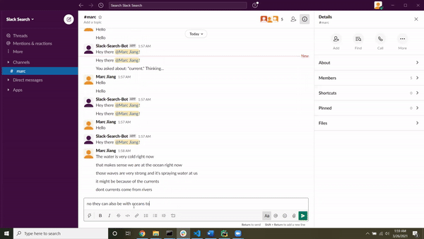

Marc Jiang
Featured Projects
Tangicraft
Using OpenCV and Mediapipe Hands to detect hand motion, hand gestures,
and block locations, we are able to detect when and where a user is
grabbing and releasing a block.
We intend to use this block movement detection as an extension to
Multicraft,
which is a project that provides multi-modal methods of playing Minecraft
such as using gaze or speech as ways of input to play Minecraft. This
block movement detection will be another mode of playing Minecraft, by
using tangible blocks to build structures in real life that can be
replicated in Minecraft via this code.
This provides additional affordances to those who may have trouble playing
Minecraft in the traditional modes, such as those in the BVI community and
younger individuals.
Next steps involve beginning to center our work with the communities we are
trying to work with through this project, redefine our positionality as
researchers, integrating this code into Multicraft, and refining the heuristics
and algorithm used in this code.


Slack Search
This was a group project made by my team for a class. The objective of this
project was to create a way for users to get their questions answered without
having to leave Slack, a communication application commonly used by students
and professionals.
To approach this, we created a bot that can detect when someone is asking a question.
If the question is about the definition of word, the bot takes the context of the
conversation and returns a Wikipedia article with the definition. If the question is
about where a location is, when an event occurred, or a description of what something is,
the bot returns a response from the Encyclopedia Brittanica.
My contribution to this project was mainly creating the context extraction, question
detection algorithm, and ":query" command.
Special Mentions
Turret Dodgeball
February 2019 - March 2019
- Implemented key, render, and event handlers in C++ for a game where players can earn money to set down/upgrade turrets, which then fire dodgeballs at the opposing team
- Developed physics algorithms to fire the dodgeballs along a trajectory and collision detection for when it hits a person or wall while maintaining game state by tracking money, location of players, turrets, and dodgeballs, and lives of players
Divvy Bike Locator
September 2019 - September 2019
- Created a C++ executable to edit, remove, and add items onto a MySQL database which contains the Divvy Bike stations' address, location, id, and capacity using X DevAPI
- Implemented a feature that outputs a MySQL data onto an XML file, which was then displayed on a map from an HTML file with Google Maps API, JavaScript, and JQuery through a local server using Python and Bottle
Papers
Multicraft: A multimodal interface for supporting and studying
learning in Minecraft
HCII2021
Marcelo Worsley, Kevin Mendoza Tudares, Tim Mwiti, Mitchell Zhen, Marc Jiang